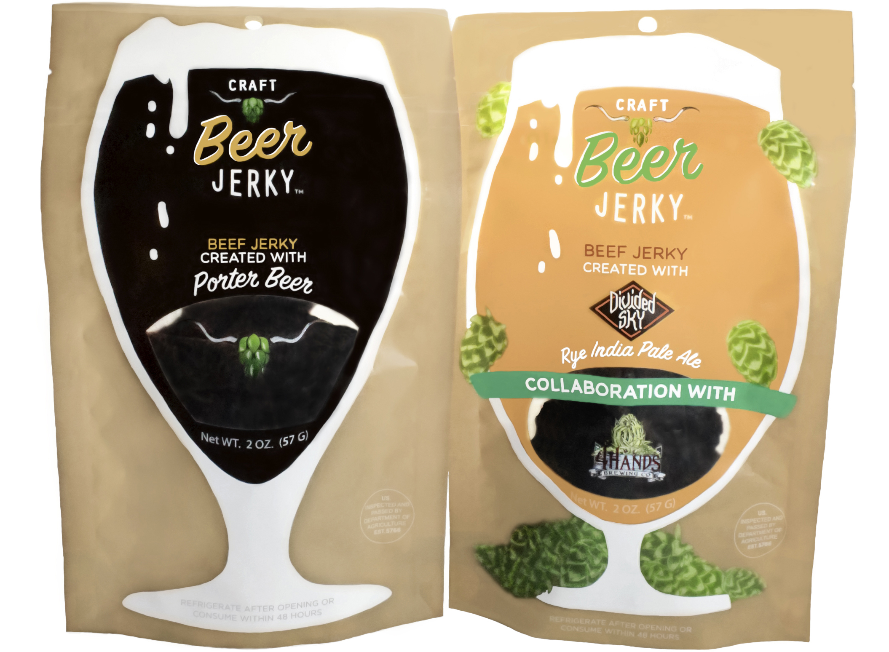
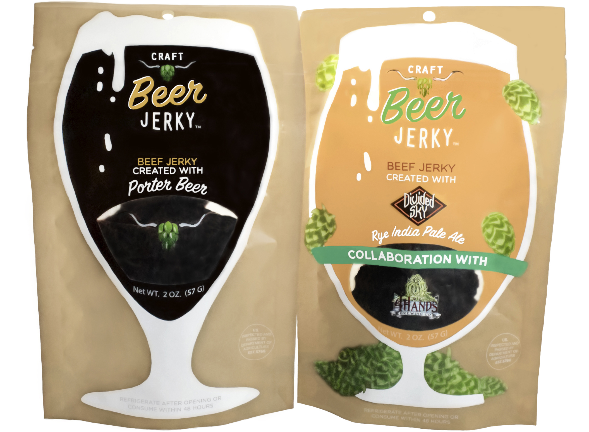
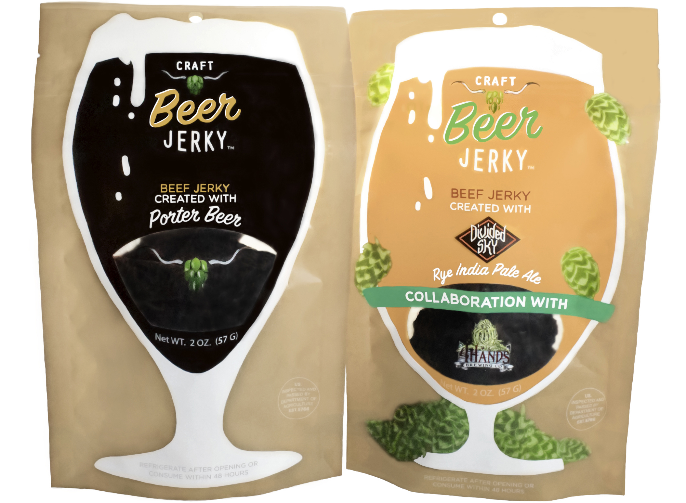

Craft Beer Jerky is a small business located in Kansas City, Missouri. I coordinated, photographed, and edited product photos for their website, craftbeerjerky.com
Craft Beer Jerky is a local business that collaborates with local beer vendors. Using a white background highlights the products themselves to further drive their sales.
I designed banner photos for their website as well.
